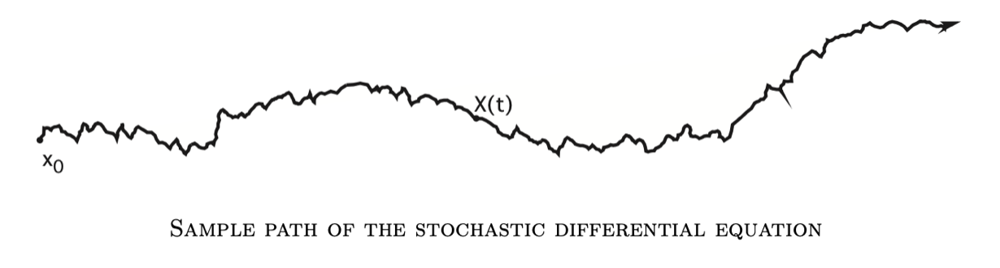

[Evans Intro SDE]1·Introduction
参考书籍：An Introduction to Stochastic Differential Equations Version 1.2 by Lawrence C. Evans. link
动机
给定 \(x_0\in\mathbb R^n\)，考虑这样一个 ODE： \[ \begin{cases} \dot{\mathbf x}(t)=\mathbf b(\mathbf x(t))&(t>0)\\ \mathbf x(0)=x_0 \end{cases} \] 其中 \(\mathbf b:\mathbb R^n\to\mathbb R^n\) 是一个给定的光滑向量场。该 ODE 的解是一条轨迹 \(\mathbf x(\cdot):[0,\infty]\to\mathbb R^n\)，如下图所示：

然而在许多应用中，实验测试得到的轨迹往往受到很多随机因素的影响，如下图所示：

因此我们需要在 ODE 的基础上添加一个噪声项： \[ \begin{cases} \dot{\mathbf X}(t)=\mathbf b(\mathbf X(t))+\mathbf B(\mathbf X(t))\boldsymbol\xi(t)&(t>0)\\ \mathbf X(0)=x_0 \end{cases}\tag{1}\label{intro} \] 其中 \(\mathbf B:\mathbb R^n\to\mathbb M^{n\times m}\) 且 \(\boldsymbol\xi(\cdot)\) 表示某种 \(m\) 维“白噪声”。基于此，我们现在需要解决以下问题：
- 在数学上严格地定义“白噪声” \(\boldsymbol\xi(\cdot)\)；
- 定义什么是 \(\eqref{intro}\) 式的解 \(\mathbf X(\cdot)\)；
- 讨论 \(\eqref{intro}\) 式是否有解，解是否唯一，其渐进行为，与 \(x_0,\mathbf b,\mathbf B\) 的关系……
启发
我们首先从简单的情形入手。设 \(m=n,\,x_0=0,\,\mathbf b\equiv 0,\,\mathbf B\equiv I\)，此时 \(\eqref{intro}\) 式的解称作维纳过程 (Wiener process) 或布朗运动 (Brownian motion)，记作 \(\mathbf W(\cdot)\)，于是有： \[ \dot{\mathbf W}(t)=\boldsymbol\xi(t) \] 即我们定义“白噪声”是维纳过程的导数过程。
基于维纳过程，\(\eqref{intro}\) 式可改写作： \[ \begin{cases} \mathrm d\mathbf X(t)=\mathbf b(\mathbf X(t))\mathrm dt+\mathbf B(\mathbf X(t))\mathrm d\mathbf W(t)\\ \mathbf X(0)=x_0 \end{cases}\tag{2}\label{intro-sde} \] 称如此形式的方程为随机微分方程 (SDE). 进一步地，如果 \(\mathbf X(\cdot)\) 满足： \[ \mathbf X(t)=x_0+\int_0^t\mathbf b(\mathbf X(s))\mathrm ds+\int_0^t\mathbf B(\mathbf X(s))\mathrm d\mathbf W,\quad\forall\ t>0 \] 则称 \(\mathbf X(\cdot)\) 是该 SDE 的解。在本书中，我们将构造 \(\mathbf W(\cdot)\)、定义随机积分 \(\int_0^t\cdots\mathrm d\mathbf W\)、表明 \(\eqref{intro-sde}\) 式有解……
伊藤公式
假设 \(n=1\) 并且 \(X(\cdot)\) 是如下 SDE 的解： \[ \mathrm dX=b(X)\mathrm dt+\mathrm dW \] 设 \(u:\mathbb R\to\mathbb R\) 是一给定光滑函数，问： \[ Y(t)=u(X(t))\quad (t\geq0) \] 是哪个 SDE 的解？如果凭微积分中链式法则的知识，我们可能会猜想： \[ \mathrm dY=u'\mathrm dX=u'b\mathrm dt+u'\mathrm dW \] 但是这是错误的！在 SDE 中，我们将会看到，从某种程度上来说，可以认为 \(\mathrm dW=(\mathrm dt)^{1/2}\)，因此计算 \(\mathrm dY\) 时需要保留 \(\mathrm dt\) 和 \((\mathrm dt)^{1/2}\)： \[ \begin{align} \mathrm dY&=u'\mathrm dX+\frac{1}{2}u''(\mathrm dX)^2+\cdots\\ &=u'(b\mathrm dt+\mathrm dW)+\frac{1}{2}u''(b\mathrm dt+\mathrm dW)^2\\ &=\left(u'b+\frac{1}{2}u''\right)\mathrm dt+u'\mathrm dW+o((\mathrm dt)^{3/2}) \end{align} \] 丢弃高阶项，有： \[ \mathrm dY=\left(u'b+\frac{1}{2}u''\right)\mathrm dt+u'\mathrm dW \] 可以看见相比一般微积分，结果多了一项 \(\frac{1}{2}u''\).